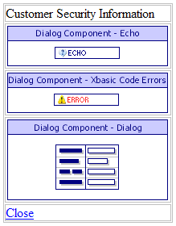
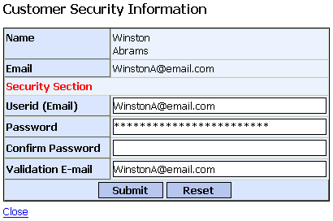

ASWCUSTSEC.A5W
Purpose
The ASWCUSTSEC.A5W page displays security information for a single customer. It is used by the application administrator to edit or add security information for a customer.
Description
The ASWCUSTSEC.A5W page contains the DLG_CUSTSEC dialog component. The component receives the c_customer_id parameter in the calling URL that is used by the dialog to find a single customer record and security record. For example: aswcustsec.a5w?c_customer_id=00000056. The DLG_CUSTSEC dialog component containes code to test for valid values for c_customer_id.
Links
The ASWCUSTSEC.A5W page is opened in a new window by a link on the GRD_CUST grid component.

ASWCUSTSEC.A5W in the WYSIWYG tab of the HTML Editor

ASWCUSTSEC.A5W in the Browser
Edits to the Page Source
When you look at ASWCUSTSEC.A5W with the Source tab of the HTML Editor, you will see a large amount of HTML and Xbasic code. The HTML Editor placed almost all of it there automatically, as we used the WYSIWYG tab to place the tables, text, graphics, and components on the page. There are a few interesting exceptions, where we changed the page code through the Source tab.
When a componepent is inserted into a page, it is placed in a HTML table layout. A new row is added at the bottom of this table and contains the hyperlink Close. When the link is clicked, JavaScript is used to close the page.
|
|
| Close |
Page Security Information
Login Required
Groups Allowed > Administrators
See Also